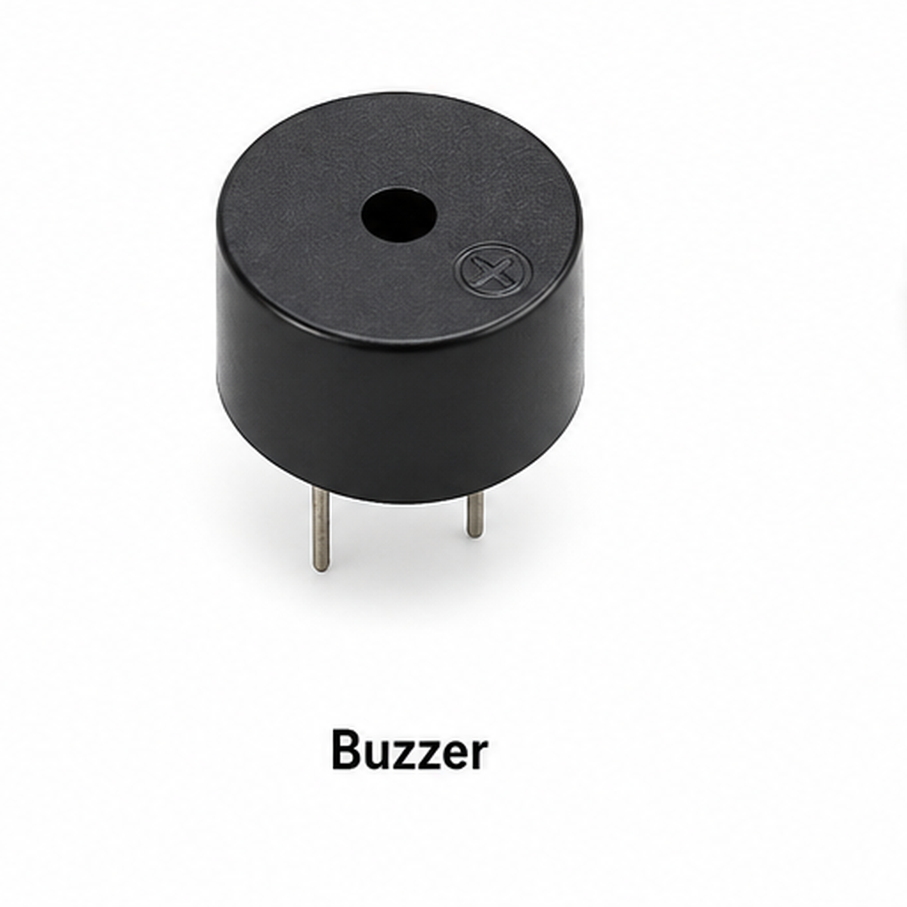

Aim
To create an automatic railway crossing model that detects an approaching train or object using an ultrasonic sensor and automatically controls warning lights, a buzzer and a servo-operated barrier.
About the Experiment
The HC-SR04 continuously measures the distance in front of the crossing. When an object comes within 20 cm, the crossing closes automatically.
The green LED turns OFF, both red LEDs turn ON, the buzzer sounds and the servo lowers the barrier. When the object moves away, the barrier opens again.
Components Required

Arduino UNO R3 (×1)
Main controller for the complete experiment.

HC-SR04 Ultrasonic Sensor (×1)
Detects an approaching train or object.

Red LED (×2)
Shows that the railway crossing is closed.
Green LED (×1)
Shows that the railway crossing is open.

220Ω Resistor (×3)
Limits current through the LEDs.

Buzzer (×1)
Provides a warning sound.

Servo Motor SG90 (×1)
Raises and lowers the railway barrier.

Breadboard (×1)
Used to assemble the circuit connections.

Jumper Wires
Used to connect the Arduino and components.
Circuit Connections
| Component | Arduino UNO Connection |
|---|---|
| HC-SR04 VCC | 5V |
| HC-SR04 GND | GND |
| HC-SR04 TRIG | D2 |
| HC-SR04 ECHO | D3 |
| Red LED 1 Anode | D4 through 220Ω |
| Red LED 2 Anode | D5 through 220Ω |
| Green LED Anode | D6 through 220Ω |
| Buzzer + | D7 |
| Servo Signal | D9 |
Barrier Open: 0°
Barrier Closed: 90°
Working Principle
↓
Barrier remains OPEN
↓
Ultrasonic sensor checks distance
↓
Object within 20 cm
↓
Green LED OFF
↓
Red LEDs and Buzzer ON
↓
Servo closes barrier to 90°
↓
Object moves away
↓
Barrier opens to 0°
Procedure
- Connect the ultrasonic sensor TRIG pin to D2 and ECHO pin to D3.
- Connect the two red LEDs to D4 and D5 through 220Ω resistors.
- Connect the green LED to D6 through a 220Ω resistor.
- Connect the buzzer to D7.
- Connect the servo signal wire to D9.
- Connect all required 5V and GND connections.
- Upload the Arduino code.
- Move an object toward the ultrasonic sensor and observe the barrier.
Arduino Code
#include <Servo.h>
// Ultrasonic sensor pins
int trigPin = 2;
int echoPin = 3;
// LED pins
int redLED1 = 4;
int redLED2 = 5;
int greenLED = 6;
// Buzzer pin
int buzzer = 7;
// Servo pin
int servoPin = 9;
// Detection distance
int detectionDistance = 20;
// Create servo object
Servo barrierServo;
void setup()
{
pinMode(trigPin, OUTPUT);
pinMode(echoPin, INPUT);
pinMode(redLED1, OUTPUT);
pinMode(redLED2, OUTPUT);
pinMode(greenLED, OUTPUT);
pinMode(buzzer, OUTPUT);
barrierServo.attach(servoPin);
// Start with gate open
barrierServo.write(0);
// Green ON
digitalWrite(greenLED, HIGH);
// Red LEDs OFF
digitalWrite(redLED1, LOW);
digitalWrite(redLED2, LOW);
noTone(buzzer);
Serial.begin(9600);
}
void loop()
{
// Send ultrasonic pulse
digitalWrite(trigPin, LOW);
delayMicroseconds(2);
digitalWrite(trigPin, HIGH);
delayMicroseconds(10);
digitalWrite(trigPin, LOW);
// Read echo time
long duration = pulseIn(echoPin, HIGH);
// Calculate distance
float distance = duration * 0.034 / 2;
Serial.print("Distance: ");
Serial.print(distance);
Serial.println(" cm");
// Train or object detected
if (distance <= detectionDistance)
{
digitalWrite(greenLED, LOW);
digitalWrite(redLED1, HIGH);
digitalWrite(redLED2, HIGH);
tone(buzzer, 1000);
// Close gate
barrierServo.write(90);
}
else
{
digitalWrite(redLED1, LOW);
digitalWrite(redLED2, LOW);
digitalWrite(greenLED, HIGH);
noTone(buzzer);
// Open gate
barrierServo.write(0);
}
delay(200);
}Expected Output
When an object is detected within 20 cm, the red LEDs and buzzer turn ON and the servo lowers the barrier to 90°. When the object moves away, the green LED turns ON and the barrier returns to 0°.
Result
The Automatic Railway Crossing Model experiment detects an approaching object and automatically controls the warning lights, buzzer and railway barrier.
What You Learn
- How to use an HC-SR04 ultrasonic sensor.
- How to control a servo motor.
- How to use LEDs as warning indicators.
- How to activate a buzzer.
- How to create simple automatic control using a distance limit.